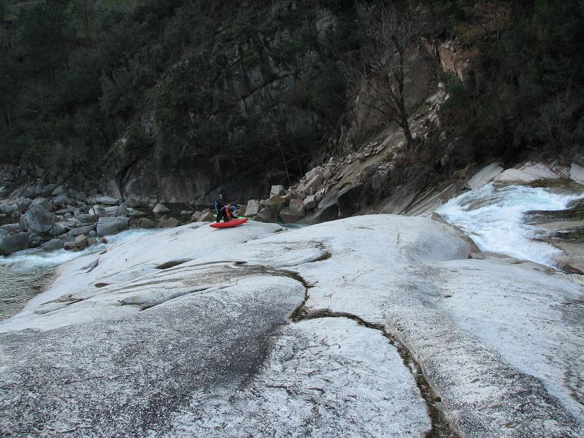
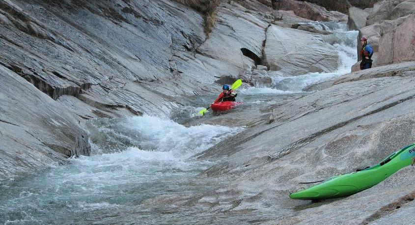

Ger�s National Park - Rio Cavado - granite slide classic.
‘La indecisión es la llave a la
flexibilidad’
|
|
Ger�s National Park - Rio Cavado - granite slide classic. |
||
|---|---|---|---|---|
|
‘La indecisión es la llave a la
flexibilidad’ |
Rio Cavado
On the last paddling day of the trip. the team headed to the granite slide classic river of Portugal, the Rio Cavado. If you've ever seen photos of boating in Portugal, it was most likely this river. It had been on our list since day one and certain elements of the team flat out refused to go home until we ran the Cavado.
We had travelled the previous evening to our new base in Ger�s, a pretty town in the Ger�s National Park. This is where the Portuguese go on holidays - it looks a lot like the lake district of northern Italy.
Another beautiful sunny day in Portugal, not bad for mid-January. This is the view from the pousada where we stayed:
Once again, Jorge Rabi�o was paddling with us. Not really sure where we were headed, we choose a high vantage point and waited for him. The Ger�s National Park is a huge forested area with loads of valleys and rivers, any one of which could have been the Cavado.
Rabi�o arrives...
Rabi�o likes to drive in the middle of the road...
At the put-in. Mr. Fred, as eager as always, is first on the water, but paddles off upstream.
The biggest drop on the Cavado is almost, almost, the most perfect slide. There are a number of switchback slides on the lead in, each seperated from the next by a easy pool. Then there's the top half of the drop itself...

Unfortunately, on the bottom of the next portion of the drop all the water funnels onto a concealed, pretty much unavoidable, rock. We heard stories of broken ribs. This is the view from the top, the boys getting ready to put back on - which is a cool slide in itself.

This drop can be run at certain water levels. It's a real pity that the exit is so sketchy, as it's a classic series of slides. Catherine at the bottom...

Ever seen someone do a downstream front loop in a creekboat? There's a rock protecting the exit of this drop. Ferg slams into it at speed, and to prevent going backwards into the hole he throws his weight forward and loops over the rock. The boat now has an unturned nose.
The entire river looked like this - smooth granite. So nice to paddle. It's Catherine's New Favourite River Ever.

After we catch up with Mr. Fred, Ferg decides it's safer if he's kept on a leash for the rest of the day.
Always up with the latest trends in kayaking, MañanaMañana brings you a new-school 'over the shoulder' photo of Catherine running a drop.
Old-school shot of Jim on the same drop...
More slides. It's like the AquaDome in Tralee or the other one in Enniscrone...
Ferg finishes out the last significant section of the Cavado.
Mr. Fred...
Short video of Catherine having fun on the Cavado slides...
The direct link is: Catherine on the Cavado slides
Towards the end of the run, as it got dark, Jim took this blurry photo of Catherine on this big drop. Apologies for the poor photography, but it proves necessary to publish this picture.
If you only ever get to do one river in Portugal, make it the Cavado. Or the Castro Laboreiro. Or maybe the Paiva Gorge. Or the Tamega. Definitely.
Finishing on the Rio Cavado was definitely ending on a high note. The next morning we hightailed it back to Porto and home.